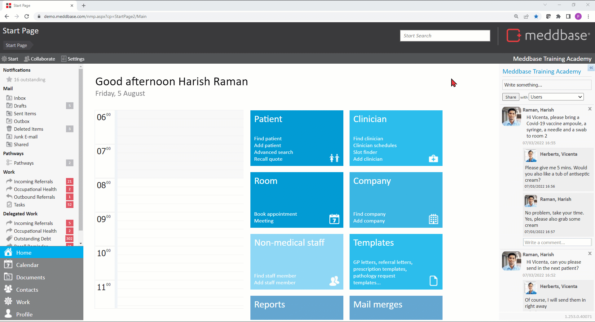

Meddbase System Administrators/Superusers with access to the Admin section of the Start Page can view and modify a host of configuration options and settings controlling the behaviour and workflows in the application. Many of the above are configured/controlled via the Configuration section*.
This article is a part of a collection of articles on the Admin > Configuration section. Click here for an overview article.
Many of the settings described in this series have default values when a Meddbase chamber is first created and do not need changing.
* Access to the Admin section and the ability to add/change configuration and settings are determined by the User's Role Group membership and Security Policy permissions granted. Please refer to the below articles for more details.
Understanding Role Groups - Definitions, related workflows and behaviours
This article is an overview of the Admin > Configuration > Consent section and the available settings within.
To access the Configuration section, a permitted User should:-

The below table explains each setting, field and/or tick box in detail*:
*The below settings dictate which checkboxes will be ticked/unticked by default and which additional sections, e.g. T&Cs will be displayed in the Consent options pop-up window by default when registering a new patient. The default settings can be overridden/amended during and post patient registration.
| Setting | Description/effect |
|---|---|
| Prompts | |
| Show contact options prompt when required | This checkbox controls whether the Consent options dialog window will pop-up automatically when registering a new patient |
| Default contact options | |
| General contact |
The Email and SMS checkboxes control whether the patient will receive automatic email and/or SMS messages for administrative activities such as:
*Please note! This messaging is separate from the Service Recall automated messages |
| Referral confirmation |
The Email and SMS checkboxes control whether he patient will receive email and/or SMS messages in various contexts. OH (Occupational Health) context, where the patient is a manager, they will receive an Email/SMS when:
Non-OH context, when Referral System v1 is used, the patient will receive an Email/SMS when:
Please note! The contents of the Email and/or SMS message can be defined under Admin > Configuration> Referrals > Referral Confirmation |
| Appointment reminder |
The Email and SMS checkboxes control whether he patient will receive automatic email and/or SMS messages reminding them of an upcoming appointment. The reminder email and/or SMS messages can be configured under Admin > Configuration > Task checker > Appointment Reminder |
| Appointment booked confirmation |
The Email and SMS checkboxes control whether he patient will receive automatic email and/or SMS messages confirming an appointment booking. The booking confirmation email and/or SMS messages can be defined in more than one places:
|
| Service recall (e.g. vaccination booster) |
The Email and SMS checkboxes control whether he patient will receive automatic email and/or SMS messages reminding them of due recalls. The reminder email and/or SMS messages can be configured under Admin > Configuration > Task checker > Recall Reminder > Patient |
| Birthday message | The Email and SMS checkboxes control whether he patient will receive automatic email and/or SMS messages on their birthday based on the date of birth in their Patient Record. These messages can be sent out at a specific time of the day. |
| Marketing |
The Email and SMS checkboxes control whether he patient will be included or excluded from mass email and/or SMS communication from the system via the Mail Merge feature, sent out for marketing purposes. Click here for more details on using the Mail Merge feature. |
| Data sharing | |
| Display in contact options | This checkbox controls whether the Data sharing section will be displayed in the Consent options dialog window |
| Accepted by default |
This checkbox controls whether the box for the 'The patient has understood and accepts data sharing' statement will be checked by default in the Consent options dialog window |
| Text | This free text field allows you to enter the text you wish to be displayed in the Data sharing section in the Consent options dialog window |
| Statistical processing | |
| Display in contact options | This checkbox controls whether the Statistical processing section will be displayed in the Consent options dialog window |
| Allowed by default | This checkbox controls whether the box for the 'The patient consents to processing and retention of records' statement will be checked by default in the Consent options dialog window |
| Text | This free text field allows you to enter the text you wish to be displayed in the Data sharing section in the Consent options dialog window |
| Terms & conditions | |
| Terms & conditions are required | This checkbox controls whether the Terms & conditions section will be displayed in the Consent options dialog window |
| Accepted by default | This checkbox controls whether the box for the 'The patient has understood and accepts the above terms' statement will be checked by default in the Consent options dialog window |
| Text | This free text field allows you to enter the text you wish to be displayed in the Data sharing section in the Consent options dialog window |
| Force re-accepting of T&C | Clicking the Force button will cause all patients to be requested to re-accept the Terms and conditions. |